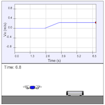

This simulation allows students to apply a force to a cart on a track. Graphs of the velocity and acceleration automatically update over time to show how these quantities change as the force is applied.